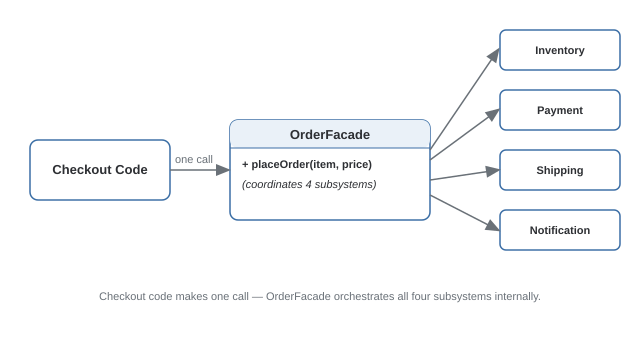

Facade Pattern
Provides a simplified, unified interface to a set of interfaces in a complex subsystem.
Theory
The problem, in plain terms
Placing an online order touches half a dozen subsystems: check inventory, charge the payment gateway, reserve the item, generate an invoice, schedule shipment, send a confirmation email. If the checkout button's click handler has to call all six directly, in the right order, handling each one's error cases, that handler becomes a tangle of subsystem knowledge that has nothing to do with "the user clicked checkout."
A Facade wraps all of that behind one simple method: orderFacade.placeOrder(cart). Internally it calls inventory, payment, shipping, etc. in the right order — but the checkout code only ever sees one call. The subsystems still exist and still work as before; the Facade just gives external code a much smaller surface to depend on.
How it's built
The Facade class holds references to (or creates) the subsystem objects it needs, and exposes a small number of high-level methods that internally orchestrate calls across those subsystems. The Facade doesn't hide the subsystems — code needing finer control can still reach past it and use the subsystems directly.
Keep the Facade as pure orchestration — the sequence and coordination of subsystem calls. Business logic specific to one subsystem belongs in that subsystem, not the facade.
Letting the Facade slowly accumulate every new feature until it becomes a god object. If it starts holding subsystem-specific logic instead of just coordinating, that logic is in the wrong place.
Where it bites you
A Facade trying to expose every possible option from every subsystem stops being a facade and just becomes another layer to maintain — the value is specifically in the common-case simplification, not full pass-through coverage.
Diagram

When to Use
- A task requires coordinating several subsystems in order, and most callers only care about the end result.
- You want to reduce how many classes external code needs to know about, without removing access for callers that need finer control.
- You're introducing a cleaner API in front of a legacy or third-party system you don't want to rewrite.
- There's really only one subsystem involved — nothing to simplify.
- Every caller actually needs fine-grained control individually — a bypassed facade isn't earning its keep.
Real-World Examples
- Framework "context" objects (e.g.,
FacesContext) — convenient access to many underlying subsystems without the caller knowing how they're wired. - jQuery (historically) — a facade over inconsistent, verbose native DOM APIs, giving one simple
$(...)interface. - Checkout/order-placement services — one
placeOrder()call orchestrating inventory, payment, shipping, notifications. - Compiler front-ends — a single
compile(sourceFile)entry point coordinating lexing, parsing, analysis, codegen. - OS system calls —
open()orread()hides enormous complexity (drivers, file systems, permissions) behind one small interface.
Interview Questions
Click a question to reveal the answer.
What's the core difference between Facade and Adapter?
Facade simplifies access to something complicated — usually multiple subsystem classes coordinated toward one goal. Adapter fixes something incompatible — a specific interface mismatch. Facade typically wraps many classes into one entry point; Adapter typically wraps one adaptee into a specific expected shape.
Does using a Facade mean callers lose access to the underlying subsystems?
No. A Facade is a convenience layer for the common case — code needing finer-grained control can still reach past it and use subsystem classes directly. A well-designed Facade doesn't lock anything down.
How would you decide what belongs in the Facade versus the subsystems?
The Facade should hold only orchestration logic — the sequence and coordination of subsystem calls. Business logic specific to one subsystem (payment retry rules, inventory reservation expiry) belongs in that subsystem. If the facade accumulates subsystem-specific logic, it's becoming a god object instead of a thin coordination layer.
Can a Facade internally use an Adapter?
Yes, commonly. If one of the subsystems a Facade coordinates has an incompatible interface, an Adapter can translate it first, and the Facade's orchestration logic calls the adapter rather than the raw subsystem.
Code & Output
Same pattern, four languages. Every output shown here was captured from a real run.